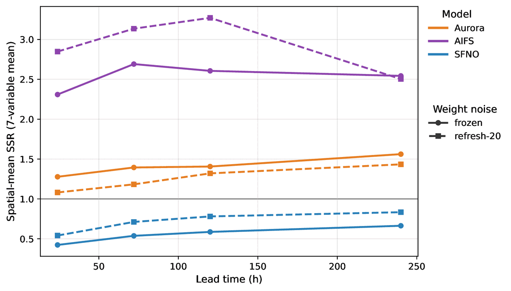

σN = σfrozen √(T / N)
Hold the draw fixed for N steps, resample at the boundary, and boost the per-draw magnitude so the accumulated weight perturbation matches the frozen case in variance. The coherent drift becomes a partly-cancelling random walk.
SFNO0.66 → 0.83works, at no CRPS cost
Aurora1.56 → 1.43barely moves, costs 1-5% CRPS
AIFS2.54 → 2.50unchanged
GraphCast0.27 → 0.15inverts

Spatial-mean SSR, frozen vs refresh-every-20.
GraphCast inverts the sign. Its weight-shared mesh forces the coarse perturbation into activation space, where per-step noise damps rather than accumulating.
A targeted lever for the scale-localised regime, not a general fix.